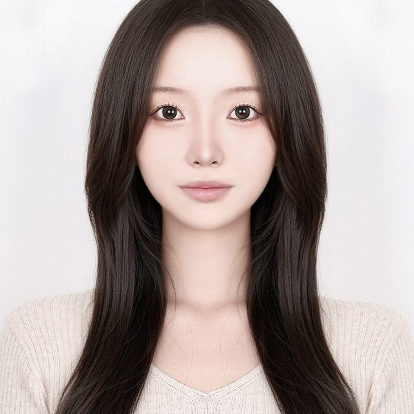

Development of a Light Duct Using Relay Lenses and Diffusers
Buildings, 15(23), 4340. DOI: 10.3390/buildings15234340
채광 시뮬레이션과 실측을 병행하며,
빛이 공간에 머무는 순간을 설계합니다.
이노베이티브 스페이스 랩은 자연光과 인공조명이 만들어내는 빛환경이 공간 경험과 사용자 행태에 미치는 영향을 연구합니다. 시뮬레이션·현장 실측·공간디자인 실험을 결합해, 데이터에 근거한 채광 설계 방법론을 제안하는 것을 목표로 합니다.
일사·조도 데이터를 기반으로 공간별 채광 성능을 예측하고 최적안을 도출합니다.
실측과 사용자 반응 조사를 통해 공간의 빛환경 만족도를 정량·정성적으로 평가합니다.
채광 데이터를 설계 언어로 전환해 실내·건축 공간 프로토타입을 실험합니다.
인제대학교에서 공간디자인 전공으로 학사 및 석사학위를, 국민대학교에서 건축디자인 전공으로 박사학위를 취득하였습니다. 이후 국민대학교에서 연구교수와 조교수를 거쳐, 현재 상명대학교 천안캠퍼스 스페이스디자인전공 교수로 재직하며 이노베이티브 스페이스 랩(Innovative Space Lab)을 지도하고 있습니다. 주요 연구 분야는 채광 및 빛환경, 광선반·광정 시스템, 건물외피와 태양광 융합기술, 사용자 중심의 지능형 공간 및 외피 설계이며, 이와 함께 공간인지와 공간의 위계 등 공간디자인과 관련된 인문학적 연구에도 깊은 관심을 가지고 연구를 수행하고 있습니다.

이노베이티브 스페이스 랩(INNO Lab)의 연구와 구성원, 연구과제 및 출판 성과를 소개하는 공식 홈페이지를 개설했습니다.
홈페이지를 통해 채광·빛환경과 공간디자인을 연결하는 연구 활동과 연구실의 새로운 소식을 지속적으로 공유하겠습니다.
Development of a Light Duct Using Relay Lenses and Diffusers
Buildings, 15(23), 4340. DOI: 10.3390/buildings15234340
Effectiveness of improving indoor uniformity of light shelves using location-awareness technology
Journal of Building Engineering, 111, 113149. DOI: 10.1016/j.jobe.2025.113149
Light shelf with under-reflector solar panels for energy efficiency and lighting
Energy and Buildings, 344, 116005. DOI: 10.1016/j.enbuild.2025.116005
Analyzing Shared Value Creation in Korea’s Public Buildings: A Latent Dirichlet Allocation Analysis
SAGE Open, 15(4), 1–15. DOI: 10.1177/21582440251386136
Verification of the effectiveness of transparent photovoltaics according to the transmittance level in Seoul, South Korea
Solar Energy, 294, 113511. DOI: 10.1016/j.solener.2025.113511
Evaluation of energy performance and daylight utilization in light shelves integrated with transparent solar panels
Energy, 326, 136336. DOI: 10.1016/j.energy.2025.136336
Development of a Solar-Tracking Movable Louver with a PV Module for Building Energy Reduction
Buildings, 15(12), 2100. DOI: 10.3390/buildings15122100
Effectiveness of internal light shelves to improve daylighting
Building Simulation, 18(4), 747–763. DOI: 10.1007/s12273-025-1241-y
Evaluation of Differences in the Motivations of Elderly People to Use Senior Citizen Centers in Yeongdo-gu, Busan, Based on Old-Age Service Systems
Applied Sciences, 15(6), 3292. DOI: 10.3390/app15063292
The Correlation Between Crime Frequency and Urban Spatial Hierarchy in Busan
Buildings, 15(7), 1010. DOI: 10.3390/buildings15071010
Exploring Digital Technologies for Addressing Risk Factors of Solitary Death in South Korea
Applied Sciences, 14(17), 7439. DOI: 10.3390/app14177439
Performance evaluation of a light shelf with a folding reflector (LSFR) to improve daylighting performance
Building and Environment, 255, 111457. DOI: 10.1016/j.buildenv.2024.111457
Evaluation of External Light Shelf Performance in Relation to the Ceiling Types Used in Indoor Spaces
Energies, 16(24), 8107. DOI: 10.3390/en16248107
Case study for deriving appropriate light shelf specifications based on indoor space depth
Energy and Buildings, 297, 113450. DOI: 10.1016/j.enbuild.2023.113450
Development of a Solar Tracking-Based Movable Louver System to Save Lighting Energy and Create a Comfortable Light Environment
Buildings, 12(11), 2017. DOI: 10.3390/buildings12112017
A study on the application of solar modules to light shelves to improve generation and daylighting efficiency
Energy and Buildings, 261, 111976. DOI: 10.1016/j.enbuild.2022.111976
Study on the application of PV modules to curved light shelves
Building and Environment, 207, 108481. DOI: 10.1016/j.buildenv.2021.108481
Light Shelf Development Using Folding Technology and Photovoltaic Modules to Increase Energy Efficiency in Building
Buildings, 12(1), 81. DOI: 10.3390/buildings12010081
Performance Evaluation of External Light Shelves by Applying a Prism Sheet
Energies, 13(18), 4618. DOI: 10.3390/en13184618
Preliminary Study on the Performance Evaluation of a Light Shelf Based on Reflector Curvature
Energies, 12(22), 4295. DOI: 10.3390/en12224295
Performance evaluation of a light shelf with a solar module based on the solar module attachment area
Building and Environment, 159, 106161. DOI: 10.1016/j.buildenv.2019.106161
Energy-saving performance of light shelves under the application of user-awareness technology and light-dimming control
Sustainable Cities and Society, 44, 582–596. DOI: 10.1016/j.scs.2018.10.005
Evaluation of a light shelf based on energy consumption for lighting and air conditioning
Indoor and Built Environment, 27(10), 1405–1414. DOI: 10.1177/1420326X17719954
Development of a Dimming Lighting Control System Using General Illumination and Location-Awareness Technology
Energies, 11(11), 2999. DOI: 10.3390/en11112999
Improvement of light-shelf performance through the use of a diffusion sheet
Building and Environment, 144, 248–258. DOI: 10.1016/j.buildenv.2018.07.040
Development of a wall module employing aircap layers
Energy and Buildings, 177, 413–422. DOI: 10.1016/j.enbuild.2018.07.063
Development of Window-Mounted Air Cap Roller Module
Energies, 11(7), 1909. DOI: 10.3390/en11071909
Development and Performance Evaluation of Light Shelves Using Width-Adjustable Reflectors
Advances in Civil Engineering, 2018, 2028065. DOI: 10.1155/2018/2028065
A preliminary study on the performance of an awning system with a built-in light shelf
Building and Environment, 131, 255–263. DOI: 10.1016/j.buildenv.2018.01.016
Development of a detachable window aircap module for energy saving
Energy and Buildings, 158, 1640–1647. DOI: 10.1016/j.enbuild.2017.11.042
Study on movable light-shelf system with location-awareness technology for lighting energy saving
Indoor and Built Environment, 26(6), 796–812. DOI: 10.1177/1420326X16659691
Daylighting performance improvement of a light-shelf using diffused reflection
Indoor and Built Environment, 26(5), 717–726. DOI: 10.1177/1420326X16631144
Effectiveness of a perforated light shelf for energy saving
Energy and Buildings, 144, 144–151. DOI: 10.1016/j.enbuild.2017.03.008
폐철도의 선형공원 조성에 따른 도시위계 변화 분석 연구
한국공간디자인학회 논문집, 21(4), 77–88. KCI: ART003352788
파노라마 기반 온라인 박물관 관람 서비스의 공간지각 취약점 분석 및 개선 방향 연구
Journal of Integrated Design Research, 25(2), 67–82. KCI: ART003342983
모바일 박물관 온라인 관람 서비스에서의 제스처 중심 인터페이스 사용성 개선연구
아시아태평양융합연구교류논문지, 12(4), 325–336. KCI: ART003330491
보행거리를 고려한 도심내 소규모 박물관의 접근 및 인지 분석연구
아시아태평양융합연구교류논문지, 11(11), 487–498. KCI: ART003267577
중고령층의 건강관리 역량이 자기효능감에 미치는 영향: 디지털 헬스 리터러시의 조절효과를 중심으로
아시아태평양융합연구교류논문지, 11(9), 575–594. KCI: ART003248602
도시위계 기반 패션분야의 팝업스토어 이용현황 분석연구
아시아태평양융합연구교류논문지, 11(4), 447–458. KCI: ART003197811
지하공간의 빛환경 개선 및 조명에너지 저감을 위한 채광시스템 동향 고찰 및 기술제언 연구
아시아태평양융합연구교류논문지, 10(10), 455–464. KCI: ART003132034
도심내 노인친화공원의 접근성 및 인지성에 따른 이용현황 분석연구
아시아태평양융합연구교류논문지, 10(9), 409–422. KCI: ART003121735
어린이미술관의 입지 및 이용률에 대한 공간구문론 연구
아시아태평양융합연구교류논문지, 10(9), 455–467. KCI: ART003121818
고독사 위험군의 심리적 활력을 위한 활동이론 기반의 커뮤니케이션 공간 연구 - 북유럽 코하우징 사례를 중심으로
한국과학예술포럼, 42(4), 111–126. KCI: ART003121050
중국 박물관의 증축에 의한 공간구조 및 위계 변화 분석 연구
한국공간디자인학회 논문집, 19(4), 231–240. KCI: ART003094135
노인전문병원 병동부의 간호스테이션 유형에 따른 평면 구조의 위계 분석 연구
아시아태평양융합연구교류논문지, 10(6), 345–359. KCI: ART003093721
수도권내 어린이도서관의 접근 및 인지에 따른 이용률 분석연구
아시아태평양융합연구교류논문지, 10(5), 285–296. KCI: ART003083693
중국 어린이박물관 실내공간의 위계 분석에 관한 연구
한국공간디자인학회 논문집, 19(3), 523–532. KCI: ART003074908
제로에너지 건물 구현을 위한 루버 기술동향 및 제언 연구
아시아태평양융합연구교류논문지, 10(4), 51–65. KCI: ART003074711
장소안도감 증진을 위한 청년 1인 가구의 커뮤니케이션 공간 디자인 연구 - 일본의 코하우징 사례를 중심으로
한국과학예술포럼, 41(5), 127–140. KCI: ART003028981
생체모방기술에 의한 건물외피 에너지 저감 연구동향 및 제언
아시아태평양융합연구교류논문지, 9(11), 35–46. KCI: ART003017798
건물에너지 저감 성능평가를 위한 사용자기반 환경모사연구 동향분석 연구
아시아태평양융합연구교류논문지, 9(9), 17–29. KCI: ART003001221
건물 빛환경 성능개선을 위한 건물외피의 IT 적용 동향 분석 연구
아시아태평양융합연구교류논문지, 9(6), 1–15. KCI: ART002971776
건물외피에 적용되는 양면형 PV의 연구동향 및 기술제언 연구
아시아태평양융합연구교류논문지, 9(6), 77–90. KCI: ART002971857
건물의 조명환경 성능개선을 위한 채광시스템 연구동향 분석 연구
아시아태평양융합연구교류논문지, 9(5), 79–91. KCI: ART002962013
박물관 온라인 관람 콘텐츠 구현 및 연구 동향 분석 연구
아시아태평양융합연구교류논문지, 9(5), 439–449. KCI: ART002962489
시니어의 심리적 안녕을 위한 소셜하우징의 커뮤니케이션 공간 특성 연구
한국과학예술포럼, 41(1), 65–79. KCI: ART002926840
텍스트 마이닝을 활용한 공간적 관점의 고독사와 주거환경의 영향요인에 관한 융복합 연구
한국과학예술포럼, 41(1), 137–154. KCI: ART002926859
효율적인 건물에너지 저감을 위한 가동형 건물외피의 태양광 패널 적용 연구 동향 분석
아시아태평양융합연구교류논문지, 8(10), 13–24. KCI: ART002890761
관람객의 박물관 관람방식에 따른 선호도 분석 기초연구
아시아태평양융합연구교류논문지, 8(10), 283–295. KCI: ART002891051
어린이박물관의 공간구성 및 위계 분석 기초 연구
한국공간디자인학회 논문집, 17(5), 297–306. KCI: ART002871616
도심내 소공원의 위계 분석 및 이용현황 분석 연구
한국공간디자인학회 논문집, 17(5), 11–20. KCI: ART002871073
박물관 증축에 의한 기능의 공간 및 시각적 위계 변화 분석 연구
한국공간디자인학회 논문집, 17(3), 23–32. KCI: ART002835752
요양병원 대기공간의 유형에 따른 공간위계 분석 기초연구
한국공간디자인학회 논문집, 16(8), 191–200. KCI: ART002791418
노인요양병원 병동부 동선구조에 따른 위계분석 연구
한국공간디자인학회 논문집, 16(5), 193–202. KCI: ART002746249
박물관 증축유형에 따른 관람자 이용공간 위계변화에 관한 기초연구 - 국립중앙박물관 소속 박물관을 분석중심으로
한국문화공간건축학회논문집, 73, 11–20. KCI: ART002690591
A Study on the Hierarchy Analysis for Improving the Utilization of Parks in the Living Area: Case-based on Geumcheon-gu, Seoul, Korea
아시아태평양융합연구교류논문지, 6(12), 61–71. KCI: ART002664299
광선반 채광성능 개선을 위한 프리즘시트 적용 방안 연구
설비공학 논문집, 30(9), 401–412. KCI: ART002383275
PV 부착 광선반의 채광성능 및 에너지 저감 기초 연구
설비공학 논문집, 30(8), 376–387. KCI: ART002372686
광덕트의 채광성능 개선을 위한 이중반사형 산광부 개발
한국건축친환경설비학회 논문집, 12(3), 290–301. KCI: ART002361949
롤링을 통한 창호부착형 에어캡 모듈 개발
설비공학 논문집, 29(11), 559–569. KCI: ART002280570
에어캡 적층을 통한 에어캡 벽 모듈 개발
설비공학 논문집, 29(10), 504–514. KCI: ART002272596